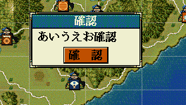

確認ボタンだけがある確認ダイアログを表示するAPIです。
ユーザーに特に念押ししたい情報を表示する、などの目的で利用することとなるでしょう。

void 確認ダイアログ表示(string ダイアログ文字列)
void カスタム::On_プレイヤ担当ターン《メイン画面》() { 確認ダイアログ表示("あいうえお確認"); }
「確認ダイアログ」に関する主な所は以上となります。 詳しくは「ダイアログ情報型.h」を参照してください。